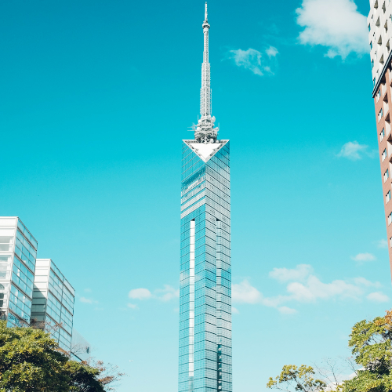

Fukuoka Tower – The Iconic Landmark of Fukuoka
Fukuoka Tower (Á¶èÂ≤°„Çø„É؄ɺ) is the tallest seaside tower in Japan and one of Fukuoka's most iconic landmarks. Standing at 234 meters tall, it offers stunning panoramic views of the city, the surrounding bay, and even as far as the island of Nokonoshima. With its unique architecture and cutting-edge design, Fukuoka Tower is a must-see for anyone visiting the city.
The Best Views of Fukuoka
The tower features a spacious observatory where visitors can enjoy breathtaking views of Fukuoka City, Hakata Bay, and beyond. Whether you visit during the day or at night, the scenery from the top is incredible.
Interactive Exhibits and City Insights
Aside from the observation decks, Fukuoka Tower offers interactive exhibits about the city's history, culture, and technology. It's a great place to learn about Fukuoka's development and future.
How to Get to Fukuoka Tower
- üå∏ From Hakata Station: Take the Kuko Line to Fukuokataishi Station (approx. 15 minutes)
- üå∏ Walking distance from Fukuokataishi Station to the tower
- üå∏ Opening hours: Open year-round, best visited during sunset or night for city lights
- üå∏ Best photo spots: The observation deck and the panoramic city views
Why Fukuoka Tower is a Must-Visit
Fukuoka Tower offers unbeatable views of the city and the bay. It’s an architectural wonder and provides a unique way to see Fukuoka from above, making it a perfect spot for sightseeing.
Tags: Fukuoka Tower, Fukuoka attractions, panoramic views Fukuoka, sightseeing tower Japan, Fukuoka landmarks, city views
Planning to visit Fukuoka Tower?
To get the most immersive and insightful experience, we recommend booking a certified local private guide from our team. All our guides are licensed professionals officially recognized by the Japanese government, offering personalized tours tailored to your interests. Please contact your selected guide in advance to confirm availability and get expert assistance for your trip.